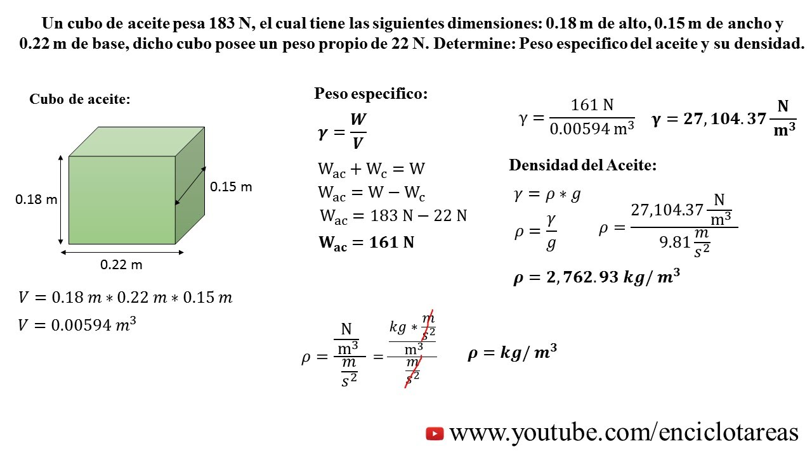
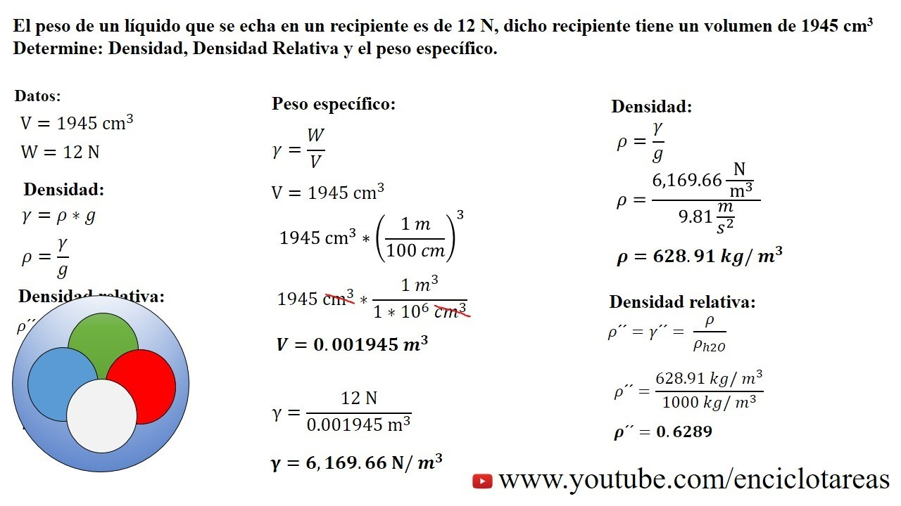

Peso Especifico
El peso específico es una medida física fundamental que describe la fuerza gravitacional ejercida por una sustancia sobre una unidad de volumen. Esta propiedad es esencial en diversas disciplinas científicas y de ingeniería, ya que proporciona información importante sobre la densidad y la gravedad de los materiales. Comprender el peso específico y su aplicación en diferentes contextos nos permite analizar y comprender una amplia gama de fenómenos naturales y artificiales.
El peso específico es una medida física fundamental que describe la fuerza gravitacional ejercida por una sustancia sobre una unidad de volumen. Esta propiedad es esencial en diversas disciplinas científicas y de ingeniería, ya que proporciona información importante sobre la densidad y la gravedad de los materiales. Comprender el peso específico y su aplicación en diferentes contextos nos permite analizar y comprender una amplia gama de fenómenos naturales y artificiales.
Al igual que la densidad, el peso específico varía según el tipo de material. Los materiales más densos, como los metales pesados, tendrán un peso específico mayor, mientras que los líquidos y gases menos densos tendrán un peso específico menor. Esta propiedad es fundamental para entender fenómenos como la flotación de objetos en líquidos y la formación de capas atmosféricas en la atmósfera terrestre.
El peso específico también juega un papel crucial en la ingeniería y la construcción. En el diseño de estructuras y dispositivos, se considera el peso específico de los materiales para determinar su resistencia, estabilidad y durabilidad. Por ejemplo, al diseñar puentes y edificios, es fundamental seleccionar materiales con un peso específico adecuado para garantizar la seguridad y la integridad estructural.
Además, el peso específico se utiliza en aplicaciones industriales y ambientales para medir la concentración de sustancias en soluciones acuosas y para evaluar la calidad y la pureza de los materiales. En la agricultura, por ejemplo, el peso específico se utiliza para determinar la densidad aparente del suelo, lo que proporciona información importante sobre su capacidad para retener nutrientes y agua.
En resumen, el peso específico es una propiedad física fundamental que desempeña un papel central en la comprensión y aplicación de una amplia gama de fenómenos naturales y artificiales. Su estudio nos permite entender la estructura y el comportamiento de los materiales, así como optimizar su uso y aplicaciones en diversos campos. Desde el diseño de estructuras hasta la evaluación de la calidad del agua, el peso específico es una herramienta invaluable que nos ayuda a comprender y aprovechar el mundo que nos rodea.
Ejercicios
